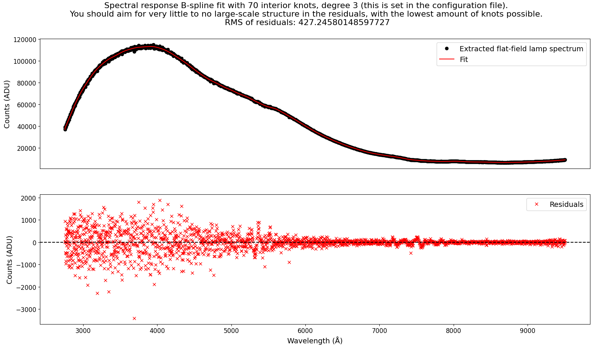
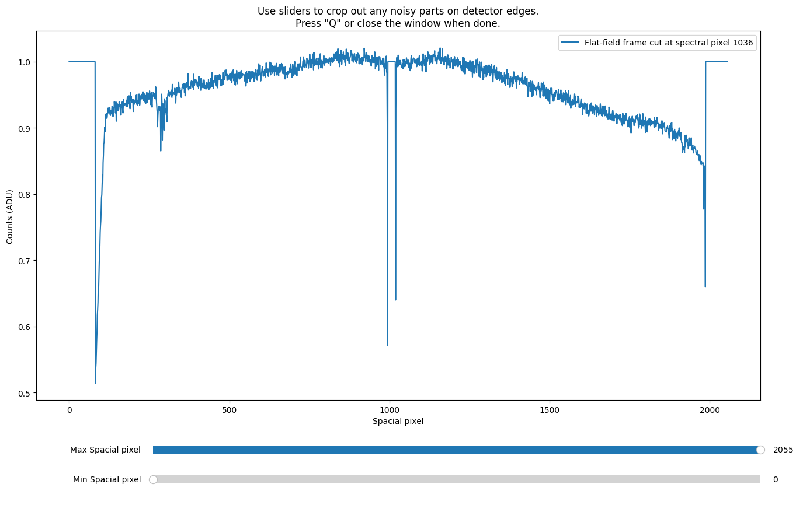
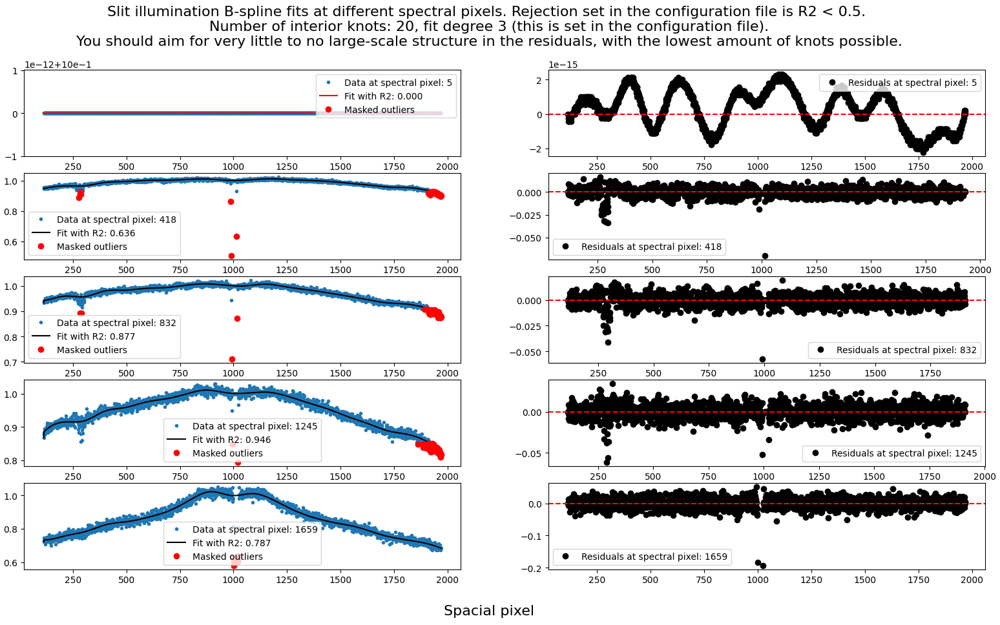
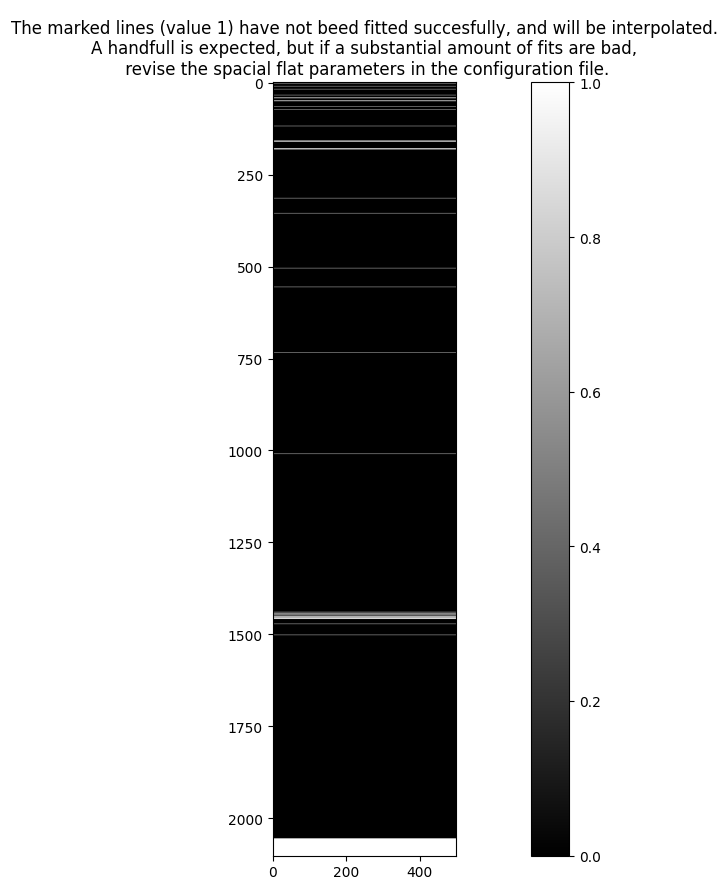
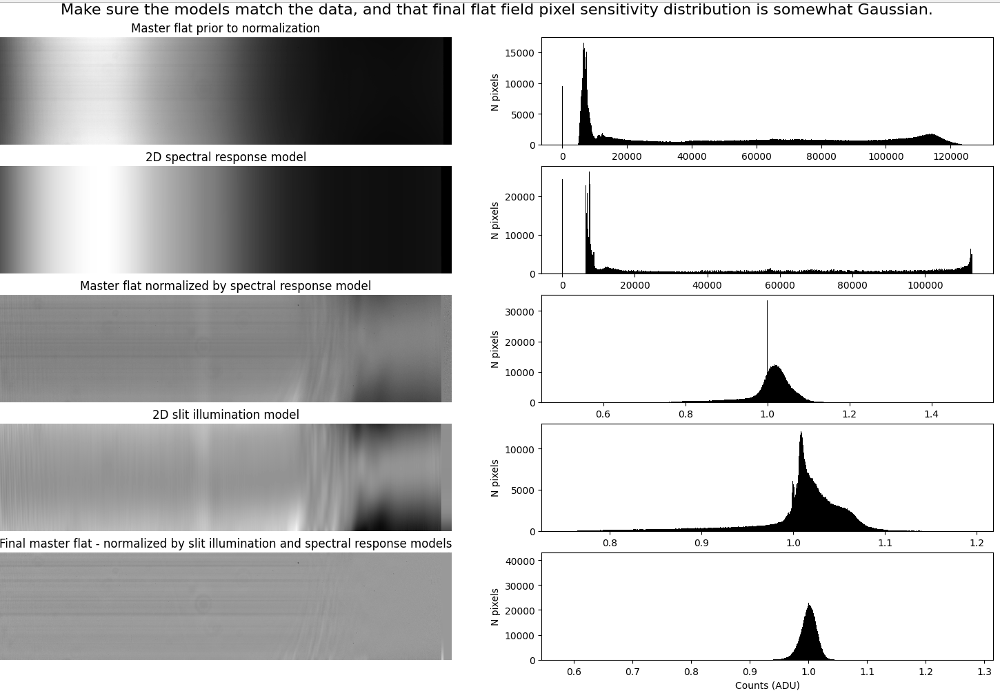
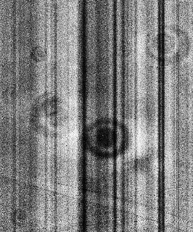
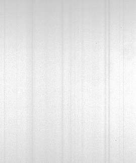

Flat-field¶
Quickstart¶
The command for running the flat-field procedure is called by:
pylongslit_flat PATH_TO_CONFIG_FILE
The flat-field procedure produces a master flat-field frame master_flat.fits,
and places it in the output directory specified in the configuration file. The master
flat is a median-combined, spectrally, and (optionally) spatially normalized flat-field frame.
It holds the information about the pixel-to-pixel sensitivity of the detector, where
pixel value 1.0 is the mean pixel intensity for the detector
The flat-field procedure has several stages - all described individually below in this documentation. The stages are:
Median combination of the raw flat frames.
Spectral normalization of the master flat.
(Optional) Spatial normalization of the master flat.
The raw flat frames are read from the directory specified in the configuration file
under the parameter "flat_dir". Make sure that no other file types are present in the
directory.
Median combination of the raw flat frames¶
The raw flat frames get median combined the same way as described in the
bias procedure. The difference is that the flat frames are
firstly bias-subtracted and if the detector has a significant dark current,
the dark current can also be removed. Similar to the bias procedure,
the user can decide whether bootstrapping is necessary for the error estimation
of the median by setting the parameter "bootstrap_errors" to true
or false in the configuration file. To see full descrition of the
error estimation in the software, please refer to the description of uncertainty calculations.
Spectral normalization of the master flat¶
Before the light from the flat-field illumination source (such as a halogen lamp) reaches the detector, it has to pass an array of optical elements - such as dispersers and filters. These optical elements, and the detector itself, have wavelength-dependent efficiencies. Because of the disperser, photons with different wavelengths will hit the detector in different places, meaning that these wavelength-dependent efficiencies will make the flat-field non-uniform in the spectral direction, as sketched below:

In this step, we want to normalize this spectral response, as we are only interested in the pixel-to-pixel sensitivity of the detector when flat-fielding.
Firstly, a slice-spectrum is taken from the median flat in the spectral direction.
This is analogous as the arc lamp 1d spectrum extraction in the wavelength calibration. The "offset_middle_cut" and "pixel_cut_extension" from the wacecalibration
parameters can be used to adjust the shape and position of the slice-spectrum
(see the documentation for line reidentification).
Further, you will have the option to manually crop away any noisy edges that
would corrupt later fitting (in the example below from the SDSS_J213510+2728
tutorial data, this would bbe the overscan region with zero counts):
{kind=link}
A B-Spline is then fitted to the slice-spectrum (wavelength vs. counts) to estimate the spectral response of the detector:
{kind=link}
Here, the main thing to watch out for is overfitting. The B-Spline should be a smooth representation of the spectral response, and should not be overfitting to the level of pixel-to-pixel deviations. The following parameters can be adjusted to control the fitting, with example values:
"flat": {
"knots_spectral_bspline": 70, # number of bspline knots
"degree_spectral_bspline": 3 # degree of the bspline
}
The fitted 1d spectral response model is then evaluated at each pixel on the detector in order to construct a 2d spectral response model. The median flat is then divided by this 2d spectral response model to produce the spectrally normalized master flat.
(Optional) Spatial normalization of the master flat¶
The same way that the flat-field is non-uniform in the spectral direction,
so might it be in the spatial direction, if the illumination source is not
uniform in the spatial direction. In this case, you can also normalize the
master flat in the spatial direction. This is done by setting the parameter
"skip_spacial" to false in the configuration file. Whether it is necessary/suitable
to do is discussed below.
The spatial normalization procedure is very similar to the spectral normalization. Firstly, a slice-spectrum is taken from the median flat in the spatial direction, and you can crop away any noisy edges. In the case for the tutorial data GQ1218+0832, the edges with no signal should be cropped away:
{kind=link}
The gap in the middle of the GTC Osiris detector mosaic is also unwanted, but the software does some sigma-clipping to remove outliers, so the fits should be fine if your own data has similar artifacts.
A B-Spline is then fitted to every spacial column of the detector, and a sample is taken for quality assesment:
{kind=link}
As with the spectral normalization, the main thing to watch out for is overfitting. The B-Spline should be a smooth representation of the spatial response, and should not be overfitting to the level of pixel-to-pixel deviations. Furthermore, since there are many fits, they are rejected/accepted automatically based on a user-defined \(R^2\) threshold (ex. the first fit in the above figure is automatically rejected). The following parameters can be adjusted to control the fitting (with example values):
"flat": {
"knots_spacial_bspline": 4, # number of bspline knots
"degree_spacial_bspline": 3, # degree of the bspline
"R2_spacial_bspline": 0.4 # R^2 threshold for the fits
}
From experience, the \(R^2\) threshold might be needed to set relatively low, as the fits can be quite noisy.
The spacial model is constructed as a stack of the individual 1d fits. For the fits that failed, the model is interpolated from the nearest successful fits. The amount of failed fits is plotted on the detector for quality assesment.
As shown with the example dataset SDSS_J213510+2728, it is okay so see some failed fits scattered around the detector and in the edges, but you should revise the parameters if large areas (that are not detector edges) fail:
{kind=link}
Final Quality Assesment Plot¶
Upon exiting, the software will produce a plot that shows the master flat and a histogram of the pixel values through each stage of the flat-fielding:
{kind=link}
The final master flat should be mostly uniform, with a approximetly Gaussian distribution of pixel values. Non uniformities in the flat-field are usually caused by dust on the optics, and not only is it okay if you see them in the master flat, it is exactly what you are looking for - as these will now get normalized when dividing the observations with the master flat:
{kind=link}
The stripes seen in the SDSS_J213510+2728 tutorial data are inherited from the raw frames and are not caused by the flat-fielding procedure:
{kind=link}
There are ways to remove these stripes (fringing), but they are not implemented in the software in order to keep the pipeline simple. The pictures above are agressively normalized to show the stripes - they are not as prominent as they appear in the pictures.
Considerations on spatial normalization¶
The normalization in spacial direction is performed under the assumption that the uneven spacial illumination of the detector flat-field is caused by the flat-field source itself being uneven through the length of the slit. This infers another assumption that the uneven spatial illumination is not caused by the optical system itself - and that the light of the science object can be assumed to have the same intensity (on the large scale), regardless of where the object is placed on the slit. This assumption might be not valid for some instruments. You can try to do a reduction run with spacial normalization, and if you start seeing strange artifacts in the reduced science frames, you can try to do the reduction without spacial normalization.
For users new to data reduction - short introduction to falt-fielding¶
Since the number of pixels on a detector is in the order of millions, it is necessary to assume homogeneous pixel sensitivity throughout the detector in order to make any further computations feasible. In other words, we want to assume that any registered photon on the detector will be registered with the same efficiency regardless of what pixel registers it. The physical properties of CCD detectors do not verify this assumption, but this can be reached through calibration.
Theoretically, the flat-field calibration procedure requires exposing the detector with completely uniform light throughout the detector. Since every pixel receives the same amount of light, any differences in registered counts between pixels can be used to evaluate the difference in pixel-to-pixel sensitivity. This kind of exposure of uniform light is called a flat-field. In practise, the procedure for flat-fielding the detector while performing spectroscopy is more complicated. From personal experience, the flat-fielding procedure is the most contraversial step in spectroscopic data reduction, as the idealogical assummption of uniform illumination is practically impossible to achieve.